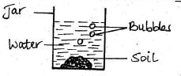
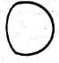
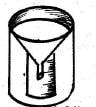
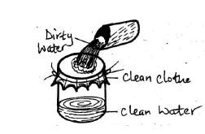

1. The sun sets in the
2. One of the following cannot give us milk. Which one is it?
3. Which type of soil has the largest soil particles?
4. Which of the following is not a living thing?
5. The experiment below shows that soil has _____

6. Plants are harvested during the _____ season.
7. Clouds that usually bring heavy rain are called
8. The diagram below shows that the weather is?
9. Shedding teeth is ______
10. The mouth of a bird is called?
11. We get wool from?
12. ______ is not a cereal crop.
13. The total number of incissors in the mouth is?
14. The phase of the moon below is called

15. When we observe the sky at night, we are not able to see the
16. Weeds are _____ crops.
17. A young sheep is called?
18. The best soil to model this cup is _____
19. The best soil for planting crops is?
20. One of the following animals can fly. Which one is it?
21. The rough layer formed by food remains on the teeth is called?
22. Which one of these is not a characteristic of living things?
23. The following are uses of water at the home except?
24. A barrier built across a river is called?
25. All the following are heavenly bodies except?
26. Our sense organ of sight is the
27. Animals that feed on plants only are called
28. Which one of the following is NOT a domestic animal?
29. Which one of the following is a root vegetable?
30. During which hour of the day would the shadow be shortest?
31. How does the animal shown below move?
32. Which fluid cannot transmit HIV/AIDS?
33. Sound moves in _____ directions.
34. Animals that feed only on the flesh of other animals are referred to as?
35. The main difference between an animal and a plant is that
36. The hotness or coldness of a place is known as?
37. Which one of the following is not a way of water storage?
38. The body of the fish is covered by?
39. The people who study the weather pattern are called?
40. This instrument below is used for measuring?

41. Too much rainfall mainly causes
42. Giving birth to young ones in animals is called?
43. A housefly has ____ wings.
44. Which one of the following is not a fruit?
45. Which plant has a leaf like the one shown below?
46. The farm animal used for transporting goods is the?
47. The method of cleaning water used below is called?

48. Which one of the following foods makes our teeth to be strong?
49. Maize, rice and wheat are examples of a group of crops called?
50. Living things are both _____ and _____